Our reality is now in a state of change.
You will note changes to your electronics or digital things, as it seems to affect them the most. My guess is that someone or some entity is actively trying to alter our reality and using AI to do so.
Future posts for about two weeks are affected, and are disjointed. And No, I do not know exactly what is going on. But I can tell you THIS.
We are in the middle of a very big slide to another template.
It’s a massive move.
Big things, bigger than ever are happening RIGHT NOW.
Today…
REMEMBER ASHLEY? She Chose Career Over DANIEL at 32 She’s 44 Now and She’s Honest About It.
Old Posting from 4Chan Outlines CURRENT Iran War – Too Well
Hal Turner World March 22, 2026
The present, ongoing war with Iran was predicted ONE DAY after the “12 Day War” ended. The “prediction” is eerily accurate so far.
If it is correct, we are heading into losing two aircraft carriers, exchange of tactical nuclear weapons, and seeing open Civil War inside the United States.
12 Day War:
The Twelve-Day War, an armed conflict between Iran and Israel, was fought from 13 June to 24 June 2025. The conflict involved Israeli air strikes against Iranian military and nuclear facilities (Operation Rising Lion) and Iranian retaliation via missile and drone strikes (Operation True Promise III), with US involvement occurring near the end.
Key details regarding the conflict:
Conflict Context: The war began on 13 June 2025, following a surprise attack by Israel, prompting a direct, large-scale confrontation between the two nations.
Ceasefire: Under pressure from the United States, both parties agreed to a ceasefire on 24 June 2025.
Involvement: The United States participated directly on 22 June 2025 by striking Iranian nuclear sites, known as Operation Midnight Hammer.
Impact: The war resulted in significant casualties and damage within Iran and initiated a new phase of open warfare, according to analysis from the International Institute for Strategic Studies and reports from Simple English Wikipedia.
ONE DAY AFTER THAT WAR STOPPED
As reported above, the 12 Day war stopped on 24 June, 2025. The very next day, June 25, an anonymous posting on the Internet web forum “4 Chan” outlined what was coming. The outline is a little too perfect so far:
I found this to be really creepy as to its accuracy. The first FIVE seem to be done already!
— Israel breaks ceasefire and attacks Iran again – DONE
— Trump responds with B2 Bunker Busters on nuclear sites – DONE
— Iran hits all Gulf oil fields, and US Bases, Blocks Hormuz and Bab al-Maneb – Oil fields, bases, Hormuz – DONE (Al Mandeb would likely have to be done by the Houthis in Yemen and it does NOT seem to be done yet)
— Oil prices skyrocket, Blackouts in Africa and Third World — Prices skyrocketing — DONE (Blackouts not beginning just yet)
— US sends three aircraft carriers — DONE
— Iran, Russia and China SINK at least two aircraft carriers (NOT DONE . . . . YET)
As you go farther down the list, it mentions an amphibious invasion by the US. Clearly that is exactly pending with the dispatching of now 8,000 Marines and Sailors on a total of three amphibious assault groups.
The rest of the list is staggering in its detail, including the “Civil War” in the United States.
It’s almost as if a person with inside knowledge of a specific plan, leaked it.
Since several of the items on this list have already taken place, and in the order they appear on the list, one has to wonder how many others will take place?
I don’t like this. At all.
Like you, I have no control over any of it. But I __can__ control how well I prepare to stay alive if all this comes to pass. Emergency food, water, medicines I need to live on, a way to generate electricity if the grid goes down – generator/solar, fuel for that generator, COMMUNICATIONS GEAR (CB or HAM radio) and so on.
GET RIGHT WITH GOD. I mean it. If you have not prayed in ages, and are a little embarrassed, go in your bathroom and close the door. Get down on your knees and pray! Tell God “Hi God, it’s me (so and so) and I know I haven’t prayed to you in years, but things are getting really bad now, and I want to come back to you.
Tell him what’s going on, tell him what you fear. Tell him you don’t have the ability to protect yourself from what’s coming, and that you thought you should pray to Him for protection.
Confess your sins, tell Him you REPENT and ask for His forgiveness.
Tell Him you’re gonna do a better job of remembering that He is God, and you’ll be in touch far more often if it’s OK with Him.
Look, I’m not a Priest, or a Pastor, or a Reverend, or a Minister. I’m just a regular guy, just like you. I can’t give Religious advice or tell you how to get right with God in some official, ritualistic way, I don’t know that stuff.
What I DO know is that each of us has to try. We have to make an effort. And an effort, it seems to me, begins by praying. So pray.
God is not some magician at our beckon call, to do magic tricks for us, or get us out of the mess we may have created. But He is real. He is there. He __can__ get us through things – but why should He if we don’t even bother to ask?
Ask Him.
If the list above is right, we will see actual, kinetic Civil War here in the USA. I don’t want that. I really don’t. But I’m sad to say I believe it __ is __ coming.
Please prepare and get right with God.
Why does “Made in the U.S.” not necessarily mean all materials are sourced domestically, and how do tariffs complicate this for manufacturers?
I own a manufacturing company in NY state. I use Steel and Aluminum. There are 3500 grades of steel. A couple of hundred are made in the US. Of the 20 or so grades I use regularly there is one that is made in the US. For Aluminum it is worse, there are over 6000 grades and none of the ones I use are made in the US. I use electronic components. Maybe a quarter of them are made in the US.
Manufacturing supply chains are incredibly complex. Even something that I buy made in the US is likely to contain materials not made in the US. Even if I wanted to, it would take decades to set up the manufacturing supply chain to manufacture everything in the US. Some components are just not available in the US no matter what we do. For example, if your product uses Cobalt, it is imported, over 90% from the Democratic Republic of Congo. None is found in the US. Farmers use potash for fertilizer. The US can supply about 6% of the potash used in the country. We buy most of it from Canada. Or, we could buy from Belarus, Russia or China. Why are we pissing off the Canadians? Do we really want to starve to death?
Is it true that these things or goods being made in China are really inferior or shoddy goods?

A Cowhide Jacket costs $ 329 retail , Mass Produced, Chrome Tanning, Half Grain
A Lambskin Jacket costs $ 7999 retail, Hand Made, Vegetable Tanning, Full Grain, Double Layered
If you pay $ 7999 and buy a Cowhide Jacket, you will obviously feel horribly let down


An Usman Sivas Carpet of 8′ * 3′ costs you maybe £ 500 for 700 Ghirodes, Labor Made and Single Threshed
A Hereke Carpet of 8′ * 3′ costs £ 25,000 to £ 30,000 for 5,000 Ghirodes (Knots per sq inch), Hand made and Double Threshed
If you pay £ 20,000 for a Usman Sivas Carpet, you will feel let down and cheated
Chinese Sellers will SELL YOU WHATEVER YOU WANT and if you are stupid, THEY WILL OBVIOUSLY PALM OFF SHODDY PRODUCTS ON YOU
You have to BUILD A RELATIONSHIP
- Visit China
- Meet them, talk to them
- Establish credibility
- Start with a small order
- Pay ON TIME (Indians have a major problem with this)
Once you build a relationship, you never have to go to China again
The Chinese seller will treat you as an OLD FRIEND and call you an OLD FRIEND and give you the best products
You get what you pay for
Chinese Products are 20% ,30% cheaper than Western Products of comparable quality
Not 70% or 80% cheaper
However many people want Chinese Products that are 70% or 80% cheaper and yet have same quality as western products
That’s a No No


This Crate for a Great Dane Puppy made in Europe costs € 445 retail
Same company makes the Crates also in China for shipping to Singapore, Thailand and India at a cost of € 290 Retail
Chinese companies make similar crates at € 175 -190 Retail
All Excellent Quality
However you also get CHEAP NON IATA recognized crates that look the same for € 55 Retail
It will simply break apart after two loadings
China has everything under the sun
You are the buyer
You will GET THE BEST PRODUCT ON EARTH FOR THE PRICE YOU PAY
Except Watches, Whisky and Wine (The 3 Ws)
Uh oh!
Have you ever faced a situation where a hotel charged you for something you didn’t think you should pay for? What did you do?
It’s kind of hard to imagine now that once upon a time, not too long ago, there was a time when internet didn’t exist, and we actually wrote letters and used landlines to make phone calls. Back in those days, oversea calls were especially expensive and the fewer available landlines going to the country of interest, the more expensive it was.
So around 1991, after the fall of the Soviet Union, a group of Russian oil and gas engineers came to Houston, Texas on a business trip and the company I worked for had put them up at a Hilton hotel. During their stay I used our company’s credit card to pay for their expenses.
Two things happened when a hotel wanted to charge us: 1) Disassembling the toilet and flooding the bathroom and surroundings. You may ask why would anyone disassemble the toilet? The answer is because American toilet bowls look differently than the ones in Russia. American bowls fill up with water to about 1/2 full and look similar to the one pictured below.


Below is a picture of a toilet bowl that looks somewhat similar to the ones in Russia, and you can see that the water level in the bowl is very low.

Anyway, one of the engineers decided that a toilet in his room was broken because there was too much water in the bowl and that he, somehow, inadvertently broke it, and that he would get charged for breaking it. So, he used his own tools to “fix” it and while trying to “fix” it he broke it. The bathroom got flooded. The maintenance people were called in to stop flooding and to fix the toilet. Initially Hilton wanted to charge us for the repairs and damages but after checking our business account and realizing how much business the company brought in, they decided not to charge us.
The second thing that happened was a phone call to Russia that cost about $2,100.00. The night before checking out, another engineer called home in Russia but after finishing the call he didn’t properly replace the handset on the phone. So, the line didn’t disconnect, and he was charged $4.50 per minute for about 8 hours. When he saw the bill, he turned pale because at that time $2100 represented about 6 months of his salary.
I had to talk to the manager, and we settled on $100.00 or so. After we settled, the engineer, who didn’t speak English, asked me what we agreed on and I said – “you are going to have to pay the whole amount of $2,100.00”, but when I saw the look on his face, I quickly told him the truth, $100.00. I think he called me an a**hole, but was thankful that I was able to bring the bill down to a manageable amount.
Nowadays, with Whatapp, Telegram, Viber and many other widely available messengers, it almost seems unreal that we actually had to pay for long distance phone calls.
Don’t forget to call your loved ones!
Cheers
Is the H1-B visa and Indian immigration into the USA effectively dead, September 2025?
Maybe not fully because of Trump, but it might be because of AI and tech industry investment trends. During the late 1990s, anyone with a UG degree would apply for tech jobs in the US and get an H1B. This is because highly skilled migrants were willing to work for 40% less pay than native Americans. That’s not the case anymore – even though 71% of H1Bs are Indians, the number of applicants has been reducing consistently since 2016.

When Trump and Miller proposed hiking the H1B fee in 2017, the big tech billionaires opposed it strongly. Trump took a U-turn and said students who come to study in US universities should be granted a green card. He said he wants to “do something” to allow DACAs to remain in the US in jobs, in small and large businesses. Trump also campaigned among Indians that “he will remain a good friend to India” to win their votes for 2nd term. He even appointed some Indian Americans to top posts to gain their trust. However, he has strongly claimed, “ Jobs are for Americans only.”
During Trump’s 2nd term election, tech billionaires funded him heavily to get re-elected. Obviously, they knew Trump would restrict H1B entries and hike fees, but still heavily funded his campaigns. Why? – Because now AI is taking over entry-level jobs in tech companies. They no longer need “cheap labor” as highly skilled migrants from India. Instead, they need “heavily skilled workers” as migrants for jobs that the native Americans cannot fill. So they’re OK with the fee hike for H1B
Since 2021, H1B for tech companies like TCS, CTS, and Infosys has been declining as they’re outsourcing contract companies, while native American companies like Amazon see a hike in H1B.
- If your H1B is to work for TCS or Infosys, chances of rejection are higher. Trump has raised the fee companies pay to sponsor H1B applicants to $100,000. The wait time for a green card is usually longer, and each time to renew a visa, they pay $100,000. So the chances of migrating to the US are almost nil.
- If your H1B is to work for Amazon or Oracle, then the chances of approval are higher. Since they’re American companies, they won’t sponsor an H1B unless you’re completely worth getting hired.
So it depends on who sponsors you for H1B. On the other hand, there might be an increase in offshoring projects to India. This is based on the GATS obligations the US has towards the WTO. This graph shows the growth and decline of IT jobs in the USA since 2020; the same trend is reflected in India

- Product-based companies have almost stopped hiring freshers; there’s also a decline in mid-level jobs.
- Service-based companies hire approximately 50,000 jobs per year — comparatively, that’s 21% fewer jobs in 2023 and 60% fewer jobs in 2022.
- Entry-level hiring with 0–2 years of experience has almost stopped or has been reduced.
- No significant count of new jobs is created — replacement hiring is also low.
- Product-based companies and startups have reduced/stopped campus interviews and placements.
- Freshers are competing against people with 2 years of work experience
- No new investments happen in the Tech sector due to global economic uncertainty and India’s uncertain macroeconomic policies
On the other hand, most Indians migrated to California for tech jobs. Looks like California has been exhausted since 2020.

Industry insiders might provide better numbers, but this is the reality
- Earlier, we developed software products using Java for end clients; similarly, we will develop enterprise solutions using AI for end clients.
- HCL is looking into reducing the software development lifecycle using AI. This doesn’t mean people will lose their jobs, but they’re upskilled to make use of AI at the development stage. More time is now spent on design and application
- Wipro has invested heavily in training and upskilling employees in using AI to manage implementation challenges across various sectors like Finance, legal, and industrial.
All major Indian IT companies have seen a 40 to 60% drop in headcount — that’s the message. Trump’s H1B restrictions and fee hike will only favor these tech companies to further drop headcount and rely more on AI and heavily skilled immigrants
Being highly skilled isn’t sufficient anymore; one needs to be heavily skilled and worthy of sponsorship of $100,000 for an H1B. That’s the safest bet.
Original question – Is the H1-B visa and Indian immigration into the USA effectively dead, September 2025?
High Schoolers Can’t Read… and Teachers Are DONE
Why are so many teachers quitting? In this video, we explore the shocking reality that many high school students can’t read at even a basic level—and the heartbreaking impact it’s having on dedicated educators. Watch real stories, expert insights, and the growing crisis in our classrooms.
Human beings have lived on earth for the last 200,000 years. Then why did all the technological inventions happen in the last 50-100 years?
That’s not actually true; the horse collar, for instance, was a total game-changer, and that came already during the Dark Ages.
But if you say most technological inventions, you’re bang on the money.
And there’s a perfectly sensible reason: most engineers and scientists in human history are active right now. And there’s an amazing thing hidden there: this statement has always been true. With some short-lived exceptions like “right after the Black Death”.
And why is this so? It’s got to do with economics. Basically, what you need in order to be able to afford to keep scientists and engineers is a surplus. You need to have resources available that aren’t immediately necessary for short term survival, so that you can spend it on having a handful of people who aren’t contributing to the next harvest.
And once you have that, it turns out that those people will make a huge contribution to harvests yet unplanted. They will, years or decades later, give back ten or a hundred times what you invested in them – meaning that you can afford still more of them, to reap even higher rewards later still. The surplus just keeps growing, faster and faster.
That’s how exponential growth works. Knowledge and technology grows exponentially, as long as you let it.
And before you wonder: yes, people have always been amazed at what they can do now, and have always assumed that we’re pretty close to having discovered all that there is to discover. Famously, Lord Kelvin in the late 19th century actively discouraged students from getting into physics, saying that there was preciously little left to find out – and most of what he knew is now covered during the first two years of undergraduate studies, before moving on to relativity and quantum mechanics.
How do you feel about Jimmy Kimmel getting canned?
I’m Chinese. He’s widely known in China — on a previous show a white kid said “Kill everyone in China.” After a round of debate, he added, “Should we leave Chinese alive?”
The white kids then engaged in a childish discussion about the possibility of “killing them all.” Jimmy cut them off and called it an “interesting Children’s Roundtable.”
Honestly, ever since that day I’ve thought China should develop its nuclear capability without limit — at least to ensure that if white people want to wipe us out, we could first destroy all white people — then keep, say, one million citizens, and rebuild the Earth.
That wouldn’t be too difficult for China. We have the world’s strongest industrial and concrete industries: we produce 60% of the world’s steel each year, and in two years we produce as much concrete as the United States did during the entire 20th century — and we are a people who built the Great Wall two thousand years ago and dug the Grand Canal fifteen hundred years ago.
By the way, that man-made canal ranks third in the world in annual throughput. First is the Yangtze, second the Pearl River, fourth the Mississippi — those were hewn by God, but the third, the Grand Canal, was dug by humans, by the Chinese.
For a show like that you Americans laugh it off.
Fine.
So now?
He got banned?
Well, sorry — now it’s our turn to laugh.
Serves him right?
Serves him right.
Serves him right!
“Should we leave Chinese alive?”
Intersting.
“Should we leave US white alive?”
Hmm……
Movie stars dancing to…’I’m So Excited!’
This is so so so much fun!
Have you ever taken the law into your own hands?
My step-daughter was graduating college, so we arrived to take part in the festivities. But she was not feeling very festive.
It seems that her landlord was keeping her security deposit because she had failed to notify the management that she would not be renewing her lease in writing 90 days in advance. However, at the beginning of her final semester the landlord did ask if she were graduating and vacating the apartment, to which she replied she was.
We found out quickly that this was a standard procedure with this particular landlord, and many students before had lost their deposits that way.
I called the management office and made an appointment for that afternoon. My last name is different from that of my step-daughter, so there was no tip off. I told my step-daughter to let me do the talking and not to react to anything I was about to say.
We both arrived for the appointment, and the manager of the complex was surprised to see my step-daughter accompanying me.
I began with “My name is TC, and I am representing Miss G.,” never once saying I was an attorney or a solicitor, but if she got that impression it was not my fault.
I continued “According to Texas Revised Statute 1820 a verbal face-to-face notification of termination of lease is all that it required to end a lease. Your refusal to return said deposit is actionable and will result in a filing.”
My step-daughter shot a puzzled look at me.
The manager mumbled something and said she was late for a meeting and did not have time to continue with us. She promptly left her office.
My step-daughter was visibly upset and asked if we failed. I told her we got her attention.
We returned to her apartment, and I called the management office a few minutes later to ask if the manager was in. I was told she was on a phone call at the moment.
I returned to the office and asked to see her. The front desk said they would check to see if she was in. Five minutes later front desk returned and said she was not available. I told her I would wait until she was. A half hour later they informed me she was gone for the day.
I asked if she would be in tomorrow. They said they did not know. I told them I will return at 8:00 a.m. and wait for her.
My daughter got her deposit back. Not only that but she told a friend what happened. Her friend happened to work in the legal services department for the university. An investigation of the management company found that their practices were not entirely legal. I don’t know if restitution was made of if there was a change in management, but if felt good to help draw a spotlight on bad people.
Wedding Gets CALLED OFF After Fiancée Does This To Her Husband
THE ALIENS
Written in response to: “Set your story after aliens have officially arrived on Earth.“
Lily Finch
Corey asked, “Do you come in peace?”
“Us? Come in peace?” Repeated the creature.
“Yes. We are a peaceful civilization for the most part,” Scott said. “We don’t want any trouble with you two,” he stated.
The creatures laughed and asked, “Are you two serious?”
Corey looked at Scott, then back at the creatures, and said, “Yes, we are. Why do you think we wouldn’t be? And why do you ask?”
The taller one said, “You really are serious, aren’t you?”
Then the other one said, “You truly don’t know, do you?”
“Know what?” Asked Scott. He was beginning to become agitated.
“We stopped here because our ship is out of fuel. We just need your help.” The tall one demanded
“Oh, well, how would we know that then?” Asked Corey.
“Yes, I suppose you are correct,” said the shorter one.
“What kind of fuel do you need? Maybe we have some,” Scott offered.
“We run on pine needles,” they said in unison.
“Well, there is no shortage of those around. Help yourselves. Don’t be shy. And let us know if you need anything else. Good luck to you both getting back home,” Corey stated.
The two beings looked at one another in amazement. Then they thanked the boys and went about their business.
While searching for their pine needles, the two beings talked with each other. They were searching near the Langford cabin, within earshot of Mary and Dale. The two of them were underneath the dock, remaining as quiet as church mice so they could listen in on the beings’ conversation.
“I can’t believe they didn’t know this used to be our planet, and they conquered us through brutal combat as the aliens!” Said the tall one.
“Yes, it would seem their history books don’t reflect their brutal takeover of our kind and our banishment from our beautiful planet that they have managed to destroy,” responded the shorter one.
“Of course, these invaders disrespected this planet, robbing it of its natural resources and breaking down the ozone layer at too great a speed for it to handle. They are the dirtiest aliens we’ve ever encountered. But, this place has always been a safe haven for us on this planet. Dale’s family has always been an ally. I wonder why they didn’t share the book with Dale?” Asked the taller one.
“Yes, that is odd. Speaking of Dale was one of those two boys Dale?”
“No. They told us he’d be naked as a jaybird when we arrived, don’t you remember?”
“Oh, right. I forgot.”
Dale, hearing this, emerged from the water.
“Hello. I’m Dale. Are you looking for me? How can I help you?” Dale asked.
“Dale, you must tell every one of your species that your kind are the aliens who safely arrived on Earth so many millennia ago. And that they’ve got it all wrong. We are not aggressive at all. We just want to get along and return to our home planet,” said the shorter one.
“Would that be so wrong?” Asked the shorter one.
“I’d be happy to do that, but without anything to support what you are saying, nobody would ever believe me. That is the truth. Even if I believe what you are telling me,” Dale said.
“There’s a book of our history and your invasion, and then your history under the cabin in a dry crawl space. Everything will be revealed there within the pages.”
As Mary got Dale back to their dock, she called the boys. Then she got busy again with CPR. She feared that he may never regain consciousness again, but she kept up with the CPR. Scott and Corey were ready to finish her off with the compressions, but Dale began to cough and sputter like the backfire of an old car. The colour returned to his face when his breath returned to normal rhythms.
Before the evening was over, Dale took a lantern and went underneath the cabin, where he found a dry crawl space. It was full of many items that were of interest to keys of the past. But the most important item was the history of the great invasion of the Earth.
Dale’s mouth fell open as his face paled, and the shock took over his body.
The End
Nuevo Cubano Chicken
with Spanish Olive Picadillo Salsa
Prep: 20 min | Cook: 25 min | Yield: 4 servings
Ingredients
- 2 tablespoons olive oil
- 4 (4 to 5 ounce) boneless, skinless chicken breast halves
- 1 tablespoon Jamaican or Caribbean jerk seasoning
- 1 medium onion, chopped
- 1 red or green bell pepper, chopped
- 2 cloves garlic, minced
- 1 (10 ounce) can diced tomatoes and green chilies, undrained
- 3/4 cup halved Lindsay® Pimiento Stuffed Spanish Manzanilla Olives
- 1/2 cup golden or dark raisins
- 1 tablespoon drained Lindsay® capers
- 1 tablespoon Worcestershire sauce
- Optional toppings: minced plum tomato, chopped fresh basil
Instructions
- Heat oil in a large nonstick skillet over medium heat until hot.
- Add chicken; sprinkle half of the jerk seasoning over chicken. Cook for 4 minutes.
- Turn; sprinkle remaining jerk seasoning over chicken. Continue to cook for 4 minutes. Transfer to a plate; set aside.
- Add onion, bell pepper and garlic to same skillet; cook for 3 minutes, stirring occasionally.
- Add tomatoes, olives, raisins, capers and Worcestershire sauce. Increase heat to medium-high and simmer 5 minutes.
- Return chicken to skillet, turning to coat. Continue cooking until chicken is no longer pink in center, about 5 minutes.
- Transfer chicken to serving plates; top with olive mixture and serve with desired toppings.
Nutrition
Per serving: Calories: 326 Calories from fat: 109 Total fat: 12g Monounsaturated fat: 8g Cholesterol: 66mg Sodium: 956mg Total Carbohydrates: 28g Dietary Fiber: 4g Protein: 28g
Attribution
Recipe and photo used with permission from: Lindsay Olives – Bell-Carter Foods
The Fall of America’s Malls | How a Retail Empire Collapsed Into Ruins
Pictures
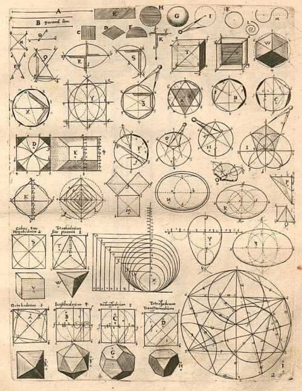
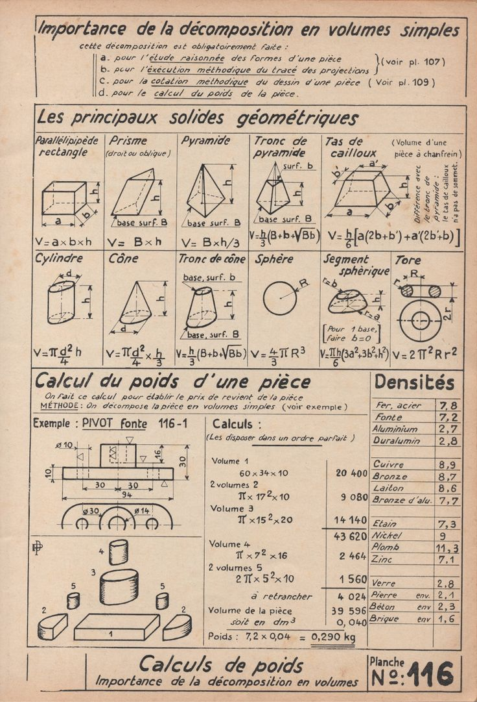
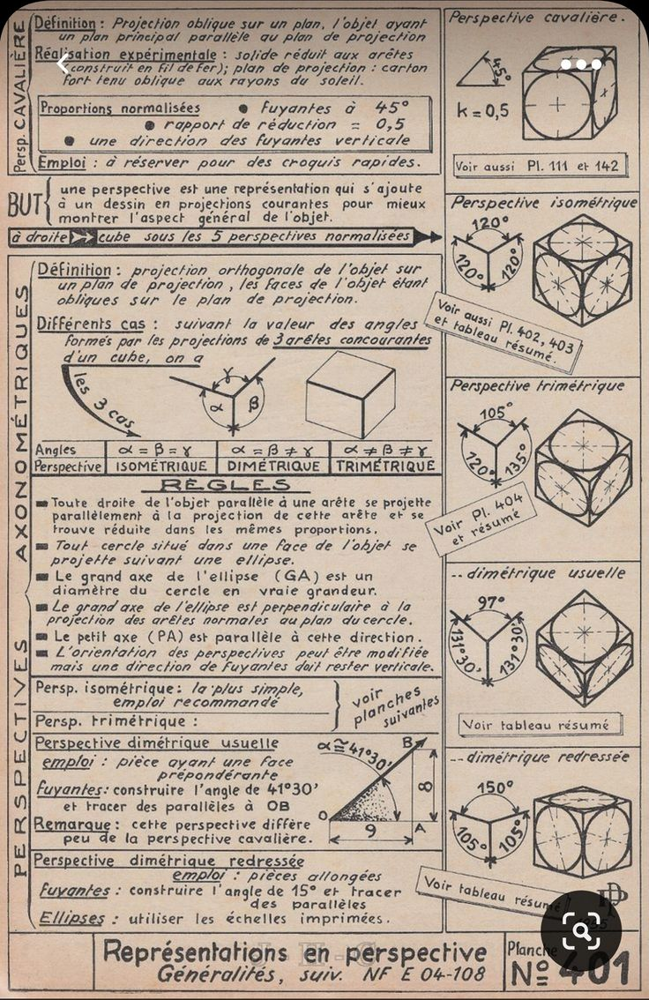
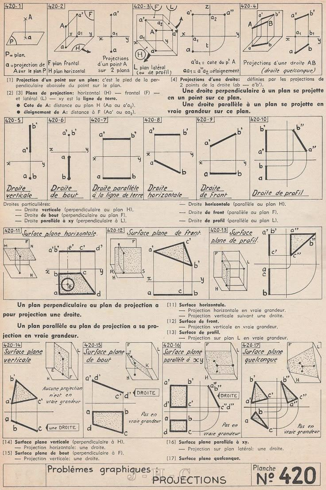
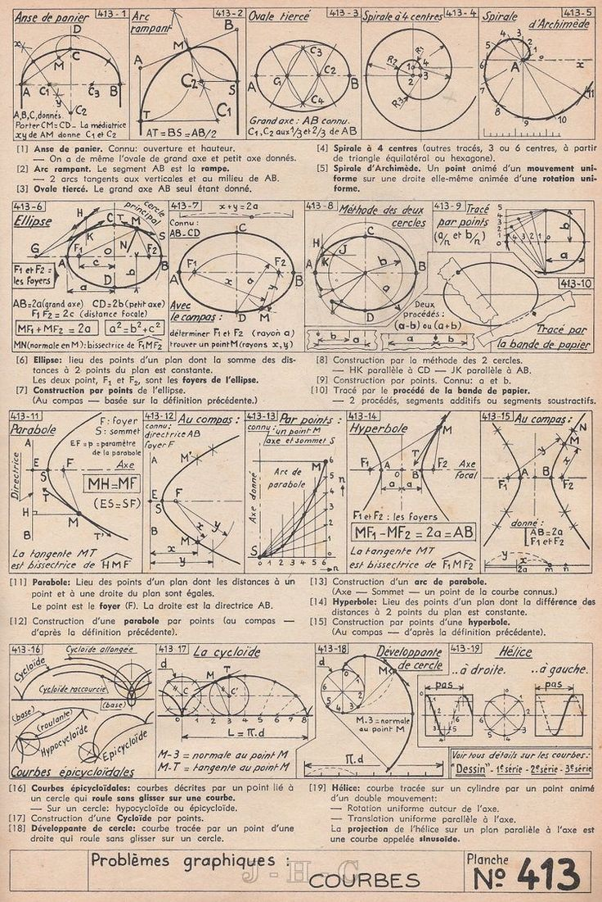
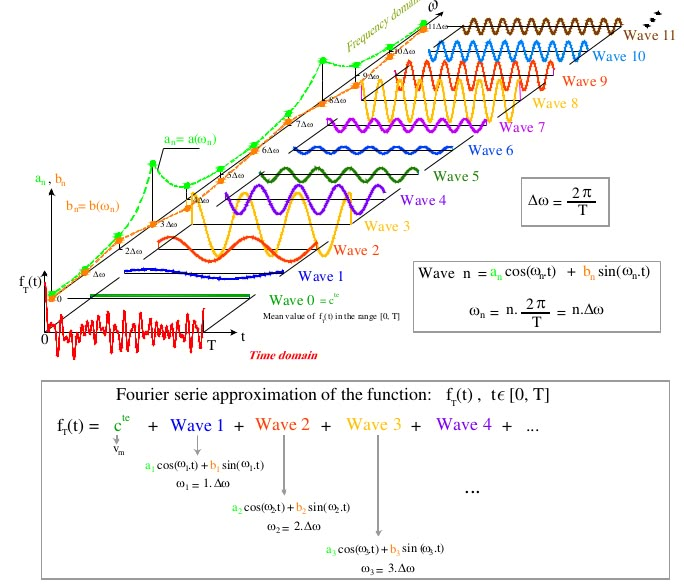
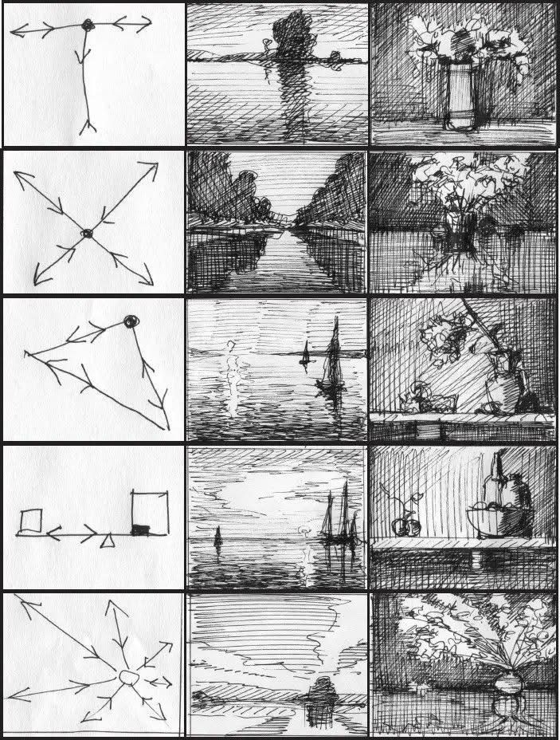
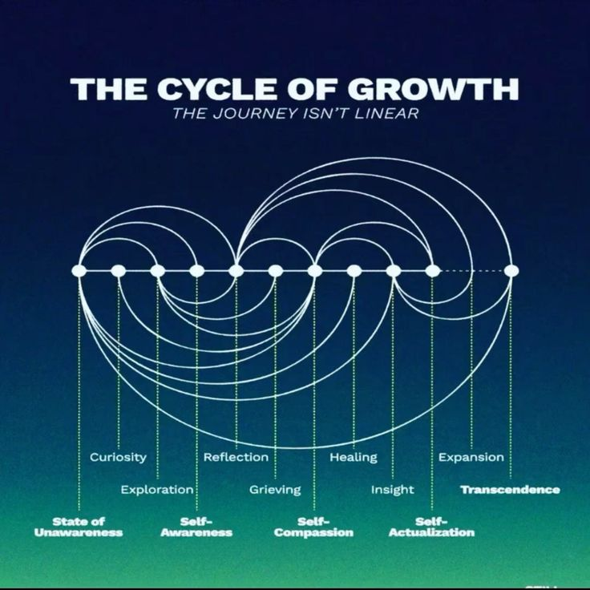
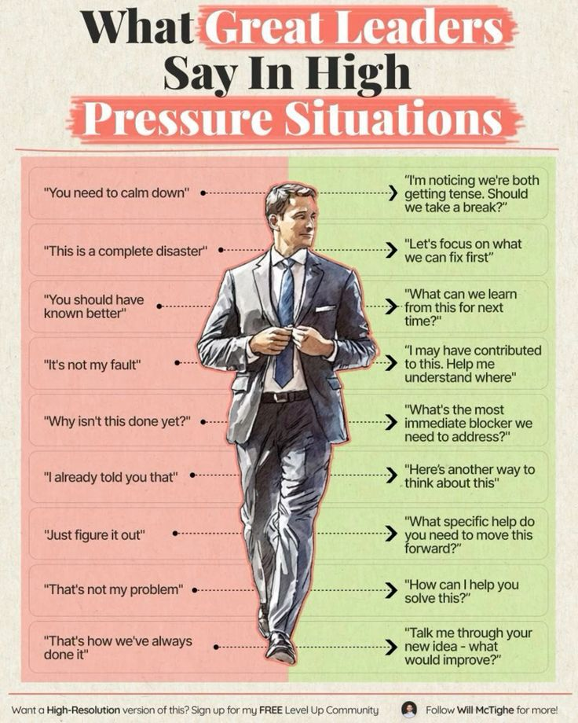
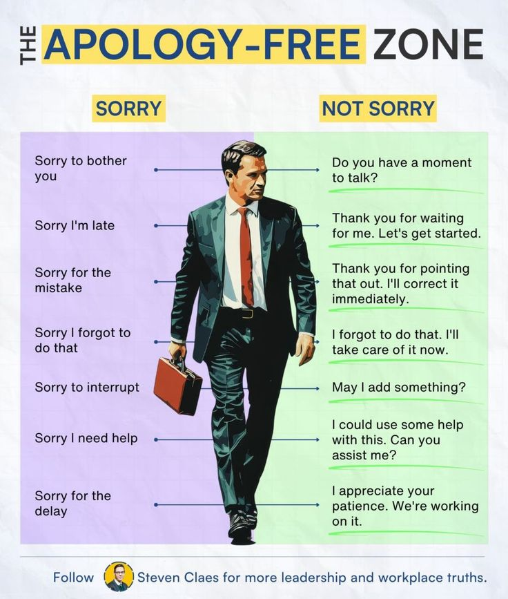
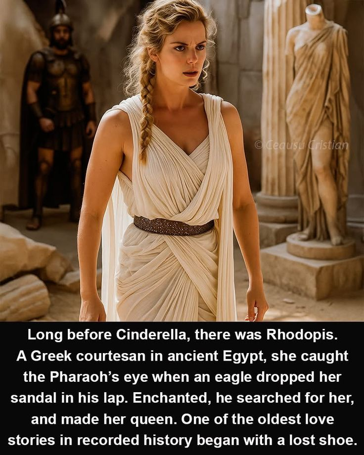
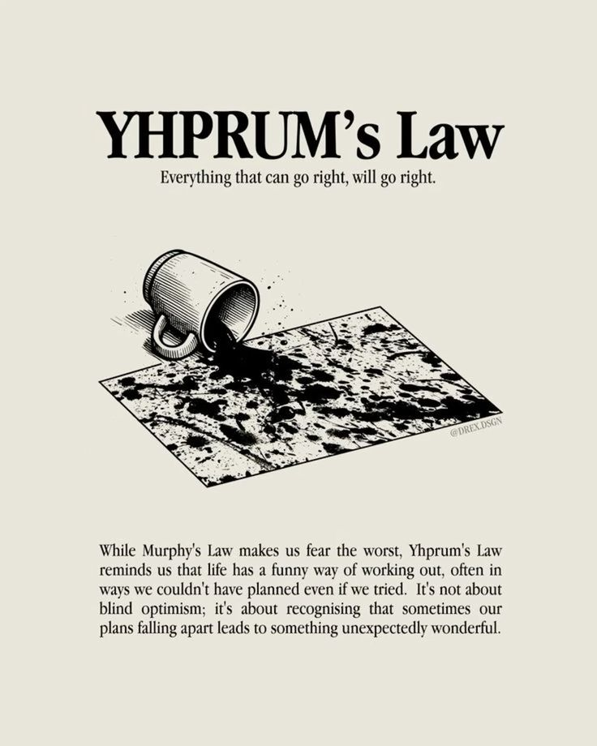
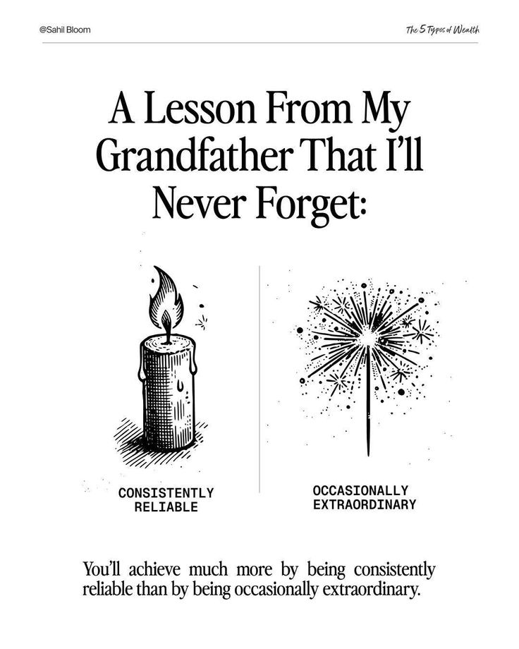
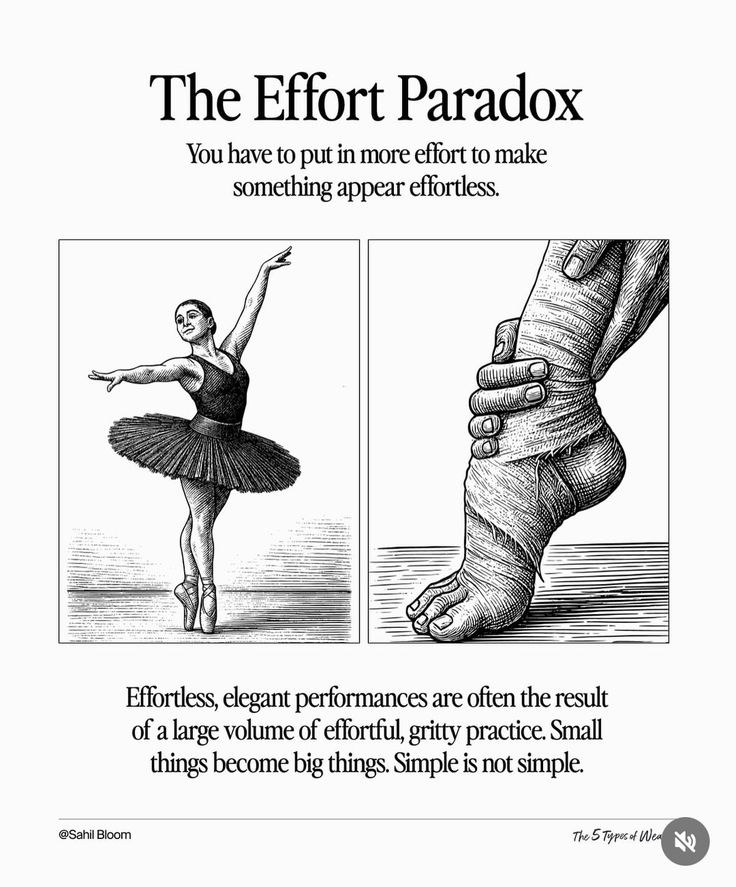
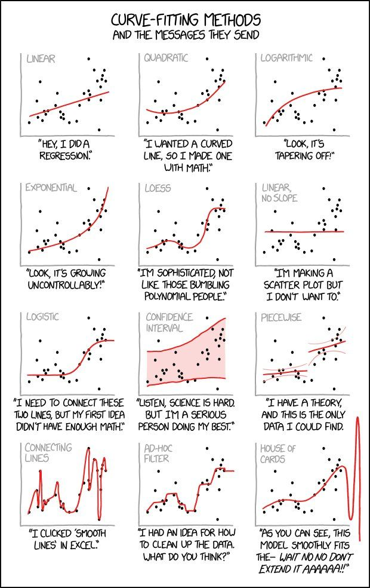
Loyalty Test
Should India comply with President Trump’s demand that it withdraw from BRICS membership in order to secure lower import tariffs from the US?

What a Dilemma🤔🤔🤔🤔
India needs BRICS because India needs Russia
Russia provides Crude Oil to India at an average of between $ 46-$53 per Barrel versus $ 65–69 per Barrel of market rate
Only one condition
You must pay in RMB or Ruble or AED since Dollar Payments won’t reach us and Rupee Payments can’t be used too much
India therefore buys RMB from China for the US Dollar and pays in RMB
India buys AED and HKD and pays in AED and HKD
India pays for part of its steel from China in HKD
This helps India a lot in import bills, helps build up forex reserves that touch the equivalent of $ 700 Billion and help improve the contribution of Trade in GDP and bring down inflation due to lower wholesale costs (Definitely not 1% but around 3% making the real growth 5.8% instead of 7.8%)
India depends on Russia for Defense
India imports a lot of Russian Technology through License and End Use Agreements for the top weapons
- Migs
- Sukhois
- Brahmos
- S-400
- Akash Missiles (Homing Technology)
- Agni V (Avionics)
India depends on Russia for Geopolitics
Russia helps India, Pakistan and China maintain a fragile peace as a common friend
Russia JUST agreed to sell 4.5 Million Tonnes of Wheat to Pakistan for 50% lower price (In RMB) to help with their floods
Russia has no Civilization based ideology like China or Hegemony like US
So if Russia wants a strong BRICS, INDIA must remain in BRICS unless either Russia agrees to allow India to leave BRICS or Russia also leaves BRICS which looks highly improbable
India needs the US too badly
The entire IT Industry and Service Industry is US Oriented with nearly 60% revenue generated by US related contracts
All the technology platforms, licensing, software, hardware in India has 30% to 100% US Technology
And almost ₹500 Lakh Crore in Western Dollar Held Accounts by 1% of the Indian Population
Unfortunately all this can be blamed on the Stupidity of S Jaishankar

Jaishankar ambitiously believed Russia could be gotten to the US Side thanks to Donald Trump and India, Russia and US could form a sort of Axis allowing India to deal with China much better
He was SO against Chinas prosperity that he aimed to use US and Russia together and get India to use US financing to consolidate Bangladesh, Nepal, SL, Maldives and Bhutan
Covid , Biden and the Ukraine conflict ruined everything
Add to this the bizzare policy of Donald J Trump against the whole world

And to his credit, Modi is holding his own and succumbing shamelessly (He will but anyone else would have kowtowed much earlier)
Now India stands in the middle of a nasty conflict between TWO BLOCKS
Russia, China and their influence
Raw materials, Deflation, Limitless Goods, Low Cost Commodities, Geopolitical respect
Versus
US, G7 and the “Coolie” Influence
Software Exports, Technology dependence, Capital Market dependence, The 1% Class and their “Colonial Gene”
Trump isn’t strong enough to Bully either China or Russia
They are too Resilient
So now India is being bullied by US every day
What must India do?
Leaving BRICS is a NO – NO
Leaving an organization as a founding member under threat by US is the WORST FOR INDIAN REPUTATION
Notice how Trump always escalates his demands
In April, he wanted India to lower our tariffs which were extremely high for US Goods
Fair enough
In June, he wanted credit for the Ceasefire between India and Pakistan
Perfectly reasonable
In July, he wanted India for open the Market for GM Grain and Crops which meant another Google like moment where Indian food supply depended on Western IP
Unreasonable
In July end he wanted India to stop buying Russian Oil, again impinging on our Sovereignty
Unreasonable
Now he wants India to leave BRICS
Totally unreasonable
He won’t stop. He will keep making demands to suck India dry and enrich Trump and his associates
So India MUST RESIST
Sir Whiskerton and the Case of the Mysterious Barn Pooper; A Tale of Tactical Tracking, Prepositional Chaos, and One Very Mischievous Gnome
Act I: The Crime Scene
The farm awoke to scandal.
Doris the Hen shrieked as she fluttered down from her roost: “MY HAYSTACK! It’s been… decorated!”
There, atop the golden hay (在上面 zài shàngmiàn), sat a suspicious pile.
Porkchop the Pig snorted near the tractor: “Dudes… there’s more under here!” (在下面 zài xiàmiàn)
Sir Whiskerton adjusted his magnifying glass. “This is no ordinary poop. This is… a prepositional puzzle.”
Act II: The Suspect Interviews
Suspect #1: Bessie the Cow
“Who, me?” Bessie blinked, her mood ring glowing “innocent.” “I only poop inside the barn!” (在里面 zài lǐmiàn)
Evidence: A single cow pie behind the water trough (在后面 zài hòumiàn). Alibi: “That’s modern art, man.”
Suspect #2: The Rabbits
“Eep!” They scattered, leaving only tiny pellets near the carrot patch (在附近 zài fùjìn).
Evidence: Too small. Too… adorable.
Suspect #3: Rufus the Dog
“I only poop on walks!“** he insisted, tail wagging.
Evidence: A mystery turd beside his doghouse (在旁边 zài pángbiān). Alibi: “That’s a… rock. Yeah.”
Act III: The Plot Thickens
Then—a breakthrough.
Ditto the Kitten tiptoed around the barn (在周围 zài zhōuwéi), whispering: “I saw something… in the shadows!” (在里面 zài lǐmiàn)
A giggle echoed. A tiny hat glinted.
Sir Whiskerton’s eyes narrowed. “Gnomeo.”
Act IV: The Shocking Truth
They cornered Gnomeo between two hay bales (在中间 zài zhōngjiān), clutching a whoopee cushion and a bag of chocolate-covered raisins.
“戏精胖仙 strikes again!” he cackled, waving his fake gnome poop (crafted from mud and mischief).
The “fart” QR code clue? Just Gnomeo blowing raspberries.
Act V: Justice Served
As punishment, Gnomeo was sentenced to:
-
Clean-up duty (with a toothbrush).
-
Preposition lessons (“The poop goes in the compost, Gnomeo!”).
-
Community service: Decorating the barn with actual art (non-poop division).
Moral: Know where your poop goes—and your prepositions too!
ESL Adventure Time!
Left Page: Comic Chaos
-
Panel 1: Doris gasps at haystack poop (在上面 zài shàngmiàn).
-
Panel 2: Porkchop finds tractor poop (在下面 zài xiàmiàn).
-
Text: “Oh no! The barn is a disaster! 但是… 谁是罪犯? Dànshì… shéi shì zuìfàn?”
Right Page: Detective Games
-
Poop Match-Up
-
Cow pie = Bessie
-
Tiny pellets = Rabbits
-
Whoopee cushion = Gnomeo!
-
-
QR Code Fun
-
Scan to hear the “fart” (Spoiler: It’s Gnomeo giggling).
-
-
Preposition Challenge
-
“Draw poop behind the barn! Say: 在后面! Zài hòumiàn!”
-
The End (and the barn has never smelled… wait, no, it still smells.)
Pan Roasted Maple Dijon Chicken
with Butternut Squash and Brussels Sprouts
Center your home cooked meal around a hearty dish such as Pan Roasted Maple Dijon Chicken with Butternut Squash and Brussels Sprouts to ensure that none of your guests leave the table hungry.
Yield: 4 servings
Ingredients
- 1 tablespoon olive oil
- 4 chicken thighs
- 4 chicken drumsticks
- 3/4 teaspoon kosher salt
- 1/2 teaspoon freshly ground pepper
- 1 tablespoon unsalted butter
- 16 Brussels sprouts (about 8 ounces), bottom trimmed, outer leaves removed and halved
- 2 cups diced (1/2 inch) butternut squash
- 1 1/2 cups chicken stock
- 2 tablespoons maple syrup
- 2 teaspoons Dijon mustard
Instructions
- In a sauté pan large enough to hold chicken in single layer, heat olive oil over medium-high heat.
- Season chicken with salt and pepper.
- Add chicken to pan, skin side down, and sauté for about 4 to 5 minutes per side, or until chicken is browned.
- Remove chicken from pan and reserve.
- In the same pan, add butter. Allow butter to melt over medium heat.
- Add sprouts and squash to pan and sauté, tossing occasionally, until outsides are golden brown, about 3 to 4 minutes.
- Remove from pan and hold separately from chicken.
- Turn heat to high and add stock, syrup and mustard. Stir and bring to boil, stirring to scrape up brown bits on bottom of pan.
- Add chicken back to pan, cover and reduce heat to medium-low. Cook over medium-low heat for 20 to 25 minutes, or until chicken registers 170 degrees F with an instant read thermometer.
- Add vegetables back to pan, cover again and cook another 8 to 10 minutes until vegetables are tender.
- Move chicken and vegetables to serving platter, placing vegetables around chicken.
- Turn heat to high and boil sauce until it is reduced and slightly thickened, about 2 to 3 minutes.
- Spoon sauce over chicken and serve.
Attribution
Recipe and photo used with permission from: National Chicken Council
A brutal date
The Vegans. (A Serving of Man.)
Written in response to: “Set your story after aliens have officially arrived on Earth.“
Ken Cartisano
A freakishly tall, gaunt and bony creature silently leads you to a cubicle and offers you a seat. It’s hard to explain how you managed to get into this place, with or without a translator, and you’re not sure if that’s the question you’re being asked by the alien agent, or officer, who has no chair, but appears to roost on a low, limb-like contrivance and makes himself comfortable by squatting behind the desk in front of you. This brings his large sunglass covered eyes almost down to your level.
It’s clear to you that he is, without a doubt, one of the aliens you’ve seen pictures of and heard about. Their arrival with a small fleet of ships stirred a great deal of initial interest, but did not produce the anticipated unity of humankind, nor the hoped for instant technological solutions to our gravest problems. On 21st Century earth, even a highly advanced alien species could be dismissed after a few weeks if they refused to die, conquer, or work miracles. Aliens are real, they’re here, and though they are rarely seen, it is impossible to deny that you’re sitting across the desk from one.
Noting your verbal difficulty, he fiddles with a box on his desk, while he gazes at you with a blend of interest and annoyance. Speaking occasionally. Finally, the box beeps and begins translating his speech into questions you can understand. “You seek asylum?” He asks.
“Yes,” you reply. “I guess so.”
“What is your name?”
“Jesus,” you say, “Jesus Morales.”
“Hay-soos,” the agent recites, “Morale-ayez.” He smiles. You smile back, then he says, “How did you get in here?”
“I…” You hesitate. Was it divine providence? You were just loitering by the entrance when one of their human liaisons strolled by wearing similar overalls, so you adjusted your gait, fell in behind him and pretended to be his assistant. Once inside the building, with people milling around, sitting on benches in the massive lobby, you took advantage of a kind of herd blindness typical in large institutions. “I pretended I was one of you,” you finally say.
He smiles. “So you’re here of your own volition?”
“Excuse me?”
“You did not get a notice to appear?”
“A notice to—uh no, I didn’t, I just came in. Wanted to see what was going on.”
“You have no family? No friends? No children?”
“Not really. No.”
“Then you would not object to emigrating.”
“Uh, no.” You didn’t know it was an option. “Where?”
“Do you have a preference?” The alien asks.
Your laughter erupts spontaneously and ends just as abruptly. “I’ll take any country that takes me, as long as it’s better than this.” Your voice is teetering on the edge of hysteria. “Have you looked outside lately?”
There are no windows. The agent blinks in surprise.
“Half the continent is in flames, what isn’t burnt is water-logged, the food is laced with plastic, there isn’t a job to be had for love or money, the subsistence checks are a joke, crime is rampant, the heat is flourishing, the water is tainted, the drugs…” Your last few complaints are muffled as you lower your head and cover your face with your hands. While your particular circumstances may not be universal, your kind of desperation is widespread. But you are unprepared for an offer of asylum. What does that even mean? What if you turn it down?
The agent clears his throat and steeples his long, boney fingers together. “It is critical that you understand, Mr. Morales, that this is a one-way trip? There is no return, no exceptions.”
His warning has an ominous tone. Well, you didn’t think they were running a shuttle service. “One way to where?” You ask. Only now do you relax enough to observe some of your surroundings: The padded chairs, polished floors and unobtrusive lighting. You’re basking in the powerful air conditioning when the agent pulls some papers from his desk and signs them, one by one. His hands are long and articulated, he has many more knuckles than you. His skin seems to be a dark purple.
You’re about to repeat your question when he says, “Who, or where were you informed of our refugee program?” Then he holds the forms perpendicular to the desk and taps them into alignment. It’s a surprisingly universal act.
His tone is neutral, but you’re suspicious. “I didn’t. I was just guessing that you might have one.”
The agent says, “So you entered under false pretenses, hoping we had a program, that you’ve never heard of.”
That is essentially correct, and now you’re wondering if this was such a good idea. “But,” you say, “I’m not sure the pretense was false. I need help. Just like most of those people out there.” He nods toward the few lingering individuals waiting in the lobby. Grimy people, hunched over, scratching their heads or rubbing their necks.
Now you’re both gazing through a glass partition, watching humanity’s flotsam. “Did you speak with any of them while you were waiting?”
“Them?” Your laugh is bitter. “No. I don’t speak the local language. I imagine most of them are clueless. They have no idea who you are. Or…”
The agent leans forward and rests his large head on those extra-long fingers. “Or?”
“Or what you’re doing.”
“What are we doing?”
You hesitate, but really, what more could you have to lose? “I was sharing a lean-to with a fellow un-homed person in the alley across the street,” you tell him. “Just a tarp stretched out between two dumpsters. Once I settled in and got the lay of the land, I noticed the police were really thin around here.”
“You saw that as anomalous?” The agent asks.
“I did. It made me curious, and it gave me a chance to watch this building for extended periods.”
“And what was the result of these extended observations?” The agent whispers.
“Well, I’d say you’re doing an excellent job of hiding in plain sight,” you say.
The agent adjusts the nameplate on his desk, a name you cannot pronounce, and reclines against the wall. “And yet, you noticed—something.”
“Well,” you lean forward, “I made it my business to watch this place once for 66 hours straight. Never slept. Drank coffee. Did a little speed. Kept a tally as the hours went by…”
The agent smiles patiently.
“A hundred and ninety-four people entered the building, and only seven came out—in three days.”
“That’s not quite three days…”
“It’s close enough.”
“They could’ve left through the back door…” the agent began.
“One of which opens into the same alley across the street,” you say. “I had a clear view of that exit as well,” you say.. “People go in, but they don’t come back out.”
“How do you know…” the agent said, “that we’re not eating them?”
That thought, truly, had not occurred to you.
“Are you?” You ask.
The agent makes a weird clucking noise and says, “No. We’re vegetarians, and it’s a big part of your planet’s problems. Eating other sentient creatures is a mild form of cannibalism and leads to other forms of horrendous behavior. We’ve really got our work cut out for us here.”
“So, you’re not eating people.”
“As I said, we’re vegetarians.
“You don’t sound optimistic.”
“We’re not. Not sure we can pull it off,” every now and then he makes this weird chirring sound. “But we have a lot of resources. I hope you’re not having second thoughts?”
“Not really,” you say. But you are.
“Good. Though your diligence is commendable, I’m afraid your relocation is no longer optional.”
“Why is that?” You ask.
The agent rises to his feet and again appears to be about 8 feet tall. “You already know more than I’m allowed to tell you.”
You’re thinking about how wonderful it would be to spend another night in a familiar alley, under a blue tarp, stretched between two dumpsters, but that doesn’t seem to be in the cards. The agent holds out the sheaf of documents he has signed, and points you to a large, energized doorway that was not noticeable a few minutes ago. “Step through the door Mr. Morales, you will be assisted on the other side.”
“Assisted? On the other side of what? Wait a minute,” you protest. “Where am I going? Where are you sending me?” There’s a tremor in your voice. “Sir?”
He does not answer, and you’ve lost your voice, but you accept the papers and step forward as if in a trance, a dead man walking, as if he had some way to make you move against your will. The agent’s voice fades as you are pulled through the portal, but you are encouraged by his parting words. “Good luck, follow instructions, and if you do eat any of your hosts, Mr. Morales, we WILL bring you back here.”